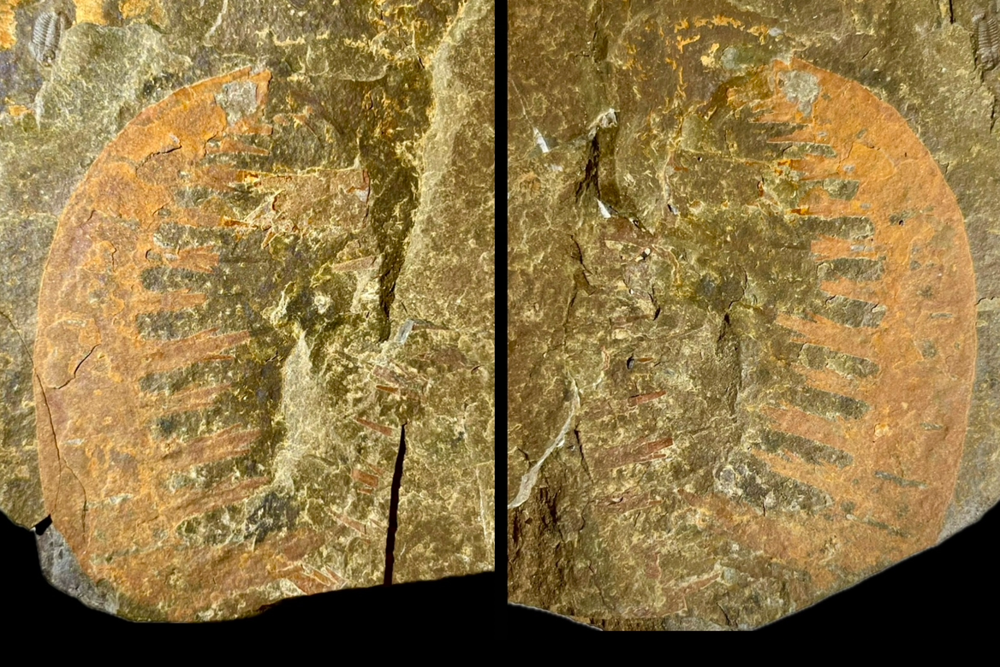

Radiodont
Size: 4.5 cm
These radiodont frontal appendages seem best assigned to the family Amplectobeluidae on account of the enlarged proximal-most endite, the endite on podomere five being larger than that of podomere three, and robust terminal spines. Within this family they are consistent with the genus Guanshancaris which is otherwise known to be endemic to the Guanshan biota. Unlike the related Amplectobelua, this genus possesses endites with auxiliary spines and its proximal-most endite is relatively short; less than one-third the length of the appendage (Zhang et al. 2023). |
 |
|---|
Copyright © 2024 by Samuel Kim, all rights reserved